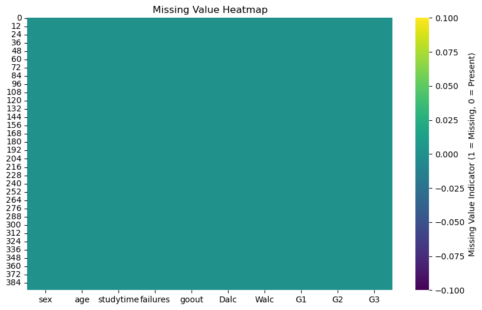
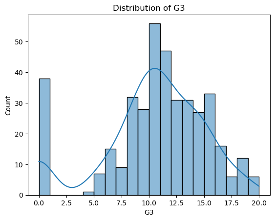
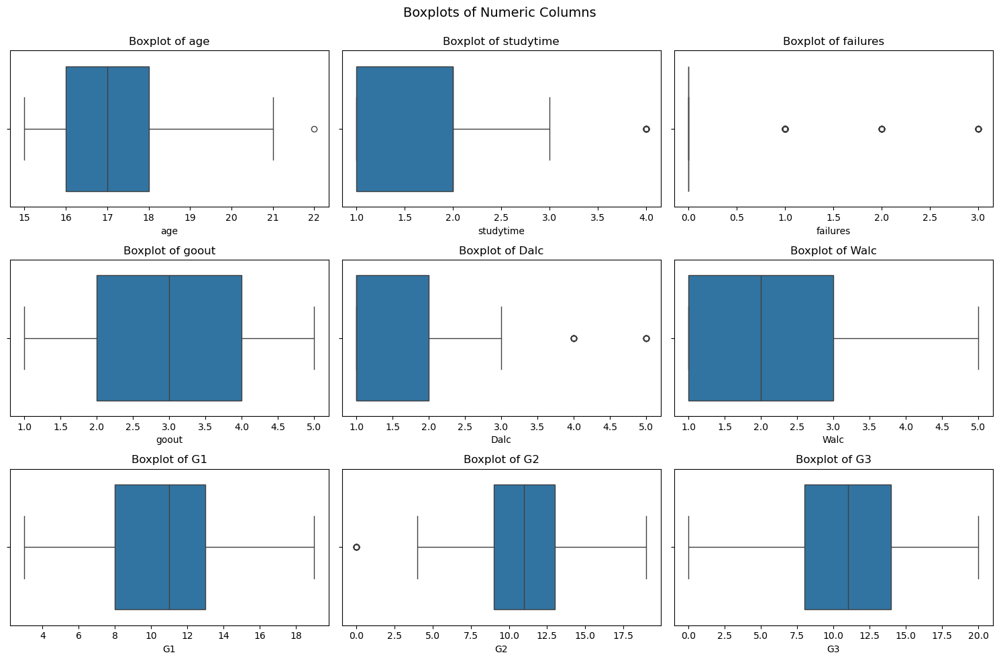
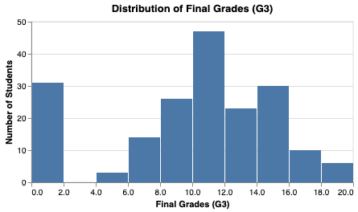
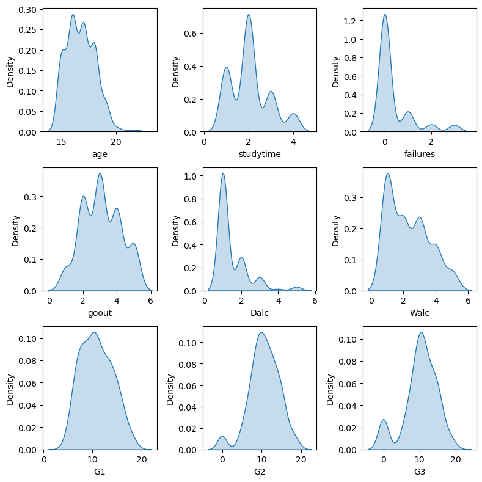
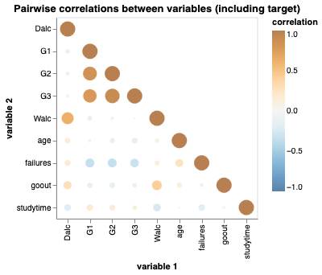
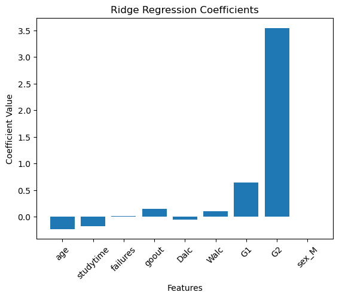

import pandas as pd
import altair as alt
# import altair_ally as ally
from sklearn.model_selection import train_test_split
from sklearn.model_selection import GridSearchCV
from sklearn.pipeline import make_pipeline
from sklearn.compose import make_column_transformer
from sklearn.preprocessing import StandardScaler, OneHotEncoder
from sklearn.linear_model import Ridge
from sklearn.metrics import mean_squared_error, mean_absolute_error
import numpy as np
import matplotlib.pyplot as plt
import seaborn as sns
import os
import pandera as pa
from scipy.stats import shapiro
from sklearn.dummy import DummyRegressor
from sklearn.model_selection import cross_validate
alt.renderers.enable("mimetype")
%matplotlib inlinePredicting academic performance using demographic and behavioral Data
by Zhengling Jiang, Colombe Tolokin, Franklin Aryee, Tien Nguyen
Packages:
Summary
This project investigates whether a student’s mathematics performance can be predicted using demographic and behavioral data, aiming to help educators in supporting students and tailoring educational strategies. Using a Ridge Regression model with optimized hyperparameters (alpha = 1), we achieved a strong predictive accuracy with a cross-validation score of 0.81 and evaluation metrics on the test set including an MSE of 3.83, RMSE of 1.96, and MAE of 1.27. While the model demonstrates robust performance, future work could explore non-linear models and provide confidence intervals for predictions to enhance interpretability and reliability, ultimately contributing to better educational outcomes.
Introduction
Math teaches us to think logically and it also provides us with analytical and problem-solving skills. These skills can be applied to various academic and professional fields. However, student performance in mathematics can be influenced by many factors, like individual factor, social factor, and family factor. Research has shown that attributes such as study habits, age, social behaviour (alcohol consumptions, etc) and family background can significantly impact a student’s academic success (Amuda, Bulus, and Joseph 2016); Modi 2023; Hjarnaa et al. 2023). Understanding these factors is crucial for improving educational outcomes.
In this study, we aim to address this question: “Can we predict a student’s math academic performance based on the demographic and behavioral data?”. Answering this question is important because understanding the factors behind student performance can help teachers provide support to struggling students. Furthermore, the ability to predict academic performance could assist schools in developing educational strategies based on different backgrounds of students. The goal of this study is to develop a machine learning model capable of predicting student’s math performance with high accuracy.
The dataset used in this study contains detailed records of student demographics and behaviors, such as age, study habits, social behaviors, and family background. The target variable, mathematics performance, is measured as a continuous score reflecting students’ final grade. This dataset offers a great opportunity to explore meaningful relationships between features and academic outcomes.
Methods & Results
The objective here to prepare the data for our classification analysis by exploring relevant features and summarizing key insights through data wrangling and visualization.
Dataset Description
The full data set contains the following columns:
school- student’s school (binary: ‘GP’ - Gabriel Pereira or ‘MS’ - Mousinho da Silveira)sex- student’s sex (binary: ‘F’ - female or ‘M’ - male)age- student’s age (numeric: from 15 to 22)address- student’s home address type (binary: ‘U’ - urban or ‘R’ - rural)famsize- family size (binary: ‘LE3’ - less or equal to 3 or ‘GT3’ - greater than 3)Pstatus- parent’s cohabitation status (binary: ‘T’ - living together or ‘A’ - apart)Medu- mother’s education (numeric: 0 - none, 1 - primary education (4th grade), 2 - “ 5th to 9th grade, 3 - “ secondary education or 4 - “ higher education)Fedu- father’s education (numeric: 0 - none, 1 - primary education (4th grade), 2 - “ 5th to 9th grade, 3 - “ secondary education or 4 - “ higher education)Mjob- mother’s job (nominal: ‘teacher’, ‘health’ care related, civil ‘services’ (e.g. administrative or police), ‘at_home’ or ‘other’)Fjob- father’s job (nominal: ‘teacher’, ‘health’ care related, civil ‘services’ (e.g. administrative or police), ‘at_home’ or ‘other’)reason- reason to choose this school (nominal: close to ‘home’, school ‘reputation’, ‘course’ preference or ‘other’)guardian- student’s guardian (nominal: ‘mother’, ‘father’ or ‘other’)traveltime- home to school travel time (numeric: 1 - <15 min., 2 - 15 to 30 min., 3 - 30 min. to 1 hour, or 4 - >1 hour)studytime- weekly study time (numeric: 1 - <2 hours, 2 - 2 to 5 hours, 3 - 5 to 10 hours, or 4 - >10 hours)failures- number of past class failures (numeric: n if 1<=n<3, else 4)schoolsup- extra educational support (binary: yes or no)- famsup` - family educational support (binary: yes or no)
paid- extra paid classes within the course subject (Math or Portuguese) (binary: yes or no)activities- extra-curricular activities (binary: yes or no)nursery- attended nursery school (binary: yes or no)higher- wants to take higher education (binary: yes or no)internet- Internet access at home (binary: yes or no)romantic- with a romantic relationship (binary: yes or no)famrel- quality of family relationships (numeric: from 1 - very bad to 5 - excellent)freetime- free time after school (numeric: from 1 - very low to 5 - very high)goout- going out with friends (numeric: from 1 - very low to 5 - very high)Dalc- workday alcohol consumption (numeric: from 1 - very low to 5 - very high)Walc- weekend alcohol consumption (numeric: from 1 - very low to 5 - very high)health- current health status (numeric: from 1 - very bad to 5 - very good)absences- number of school absences (numeric: from 0 to 93)
These columns represent the grades:
- G1 - first period grade (numeric: from 0 to 20)
- G2 - second period grade (numeric: from 0 to 20)
- G3 - final grade (numeric: from 0 to 20, output target)
Attribution: The dataset variable description is copied as original from the UCI Machine Learning Repository.
Data Loading, Wrangling and Summary
Let’s start by loading the data and have an initial view of data set structure.
The file is a .csv file with ; as delimiter. Let’s use pandasto read it in.
!python ../src/download_data.pyFile already existed, exitting script...# Validate and load data file format
def load_data(filename: str) -> pd.DataFrame:
if os.path.isfile(filename):
if filename[-4:] == '.csv':
df = pd.read_csv(filename, delimiter=';')
return df
return "File is not in directory"
student_performance = load_data('../data/raw/student-mat.csv')This provides an overview of the data set with 33 columns, each representing student attributes such as age, gender, study time, grades, and parental details.
Let’s get some information on the data set to better understand it.
student_performance.head()| school | sex | age | address | famsize | Pstatus | Medu | Fedu | Mjob | Fjob | ... | famrel | freetime | goout | Dalc | Walc | health | absences | G1 | G2 | G3 | |
|---|---|---|---|---|---|---|---|---|---|---|---|---|---|---|---|---|---|---|---|---|---|
| 0 | GP | F | 18 | U | GT3 | A | 4 | 4 | at_home | teacher | ... | 4 | 3 | 4 | 1 | 1 | 3 | 6 | 5 | 6 | 6 |
| 1 | GP | F | 17 | U | GT3 | T | 1 | 1 | at_home | other | ... | 5 | 3 | 3 | 1 | 1 | 3 | 4 | 5 | 5 | 6 |
| 2 | GP | F | 15 | U | LE3 | T | 1 | 1 | at_home | other | ... | 4 | 3 | 2 | 2 | 3 | 3 | 10 | 7 | 8 | 10 |
| 3 | GP | F | 15 | U | GT3 | T | 4 | 2 | health | services | ... | 3 | 2 | 2 | 1 | 1 | 5 | 2 | 15 | 14 | 15 |
| 4 | GP | F | 16 | U | GT3 | T | 3 | 3 | other | other | ... | 4 | 3 | 2 | 1 | 2 | 5 | 4 | 6 | 10 | 10 |
5 rows × 33 columns
student_performance.info()<class 'pandas.core.frame.DataFrame'>
RangeIndex: 395 entries, 0 to 394
Data columns (total 33 columns):
# Column Non-Null Count Dtype
--- ------ -------------- -----
0 school 395 non-null object
1 sex 395 non-null object
2 age 395 non-null int64
3 address 395 non-null object
4 famsize 395 non-null object
5 Pstatus 395 non-null object
6 Medu 395 non-null int64
7 Fedu 395 non-null int64
8 Mjob 395 non-null object
9 Fjob 395 non-null object
10 reason 395 non-null object
11 guardian 395 non-null object
12 traveltime 395 non-null int64
13 studytime 395 non-null int64
14 failures 395 non-null int64
15 schoolsup 395 non-null object
16 famsup 395 non-null object
17 paid 395 non-null object
18 activities 395 non-null object
19 nursery 395 non-null object
20 higher 395 non-null object
21 internet 395 non-null object
22 romantic 395 non-null object
23 famrel 395 non-null int64
24 freetime 395 non-null int64
25 goout 395 non-null int64
26 Dalc 395 non-null int64
27 Walc 395 non-null int64
28 health 395 non-null int64
29 absences 395 non-null int64
30 G1 395 non-null int64
31 G2 395 non-null int64
32 G3 395 non-null int64
dtypes: int64(16), object(17)
memory usage: 102.0+ KBThe data set contains 395 observations and 33 columns covering different aspects of student demographics, academic and behavioral traits.
We can see that there is no missing values. There is not need to handle NAs.
The data set includes categorical (school, sex, Mjob) and numerical (age, G1, G2, G3) features.
There is a large range of features but not all of them are necessary for this analysis. Let’s proceed and select only the necessary ones.
Let’s selected the following key columns:
- Demographic attributes: sex, age
- Academic Attributes: studytime, failures, G1, G2, G3 (grades for three terms)
- Behavioral Attributes: goout (socializing), Dalc (weekday alcohol consumption), Walc (weekend alcohol consumption)
We will also split the dataset into train and test set with a 80/20 ratio. We also set random_state=123 for reproducibility.
# Necessary columns
columns = ['sex',
'age',
'studytime',
'failures',
'goout',
'Dalc',
'Walc',
'G1',
'G2',
'G3']
subset_df = student_performance[columns]
train_df, test_df = train_test_split(
subset_df, test_size=0.2, random_state=123
)Data Validation Checks
# Data validation checks:
# Correct column names
# No empty observations
# Correct data types in each column
# No duplicate observations
# Correct category levels (i.e., no string mismatches or single values)
schema = pa.DataFrameSchema(
{
"sex": pa.Column(str, pa.Check.isin(["M", "F"])),
"age": pa.Column(int, pa.Check.between(15, 22), nullable=False),
"studytime": pa.Column(int, pa.Check.between(1, 4), nullable=False),
"failures": pa.Column(int, pa.Check.between(0, 4), nullable=False),
"goout": pa.Column(int, pa.Check.between(1, 5), nullable=False),
"Dalc": pa.Column(int, pa.Check.between(1, 5), nullable=False),
"Walc": pa.Column(int, pa.Check.between(1, 5), nullable=False),
"G1": pa.Column(int, pa.Check.between(0, 20), nullable=False),
"G2": pa.Column(int, pa.Check.between(0, 20), nullable=False),
"G3": pa.Column(int, pa.Check.between(0, 20), nullable=False)
},
checks=[
pa.Check(lambda df: ~df.duplicated().any(), error="Duplicate rows found."),
pa.Check(lambda df: ~(df.isna().all(axis=1)).any(), error="Empty rows found.")
]
)
schema.validate(subset_df, lazy=True);# Missingness Not Beyond Expected Threshold
def validate_missingness(data: pd.DataFrame, threshold: float = 0.05) -> None:
"""
Validate that missing values in the dataset do not exceed the acceptable threshold and visualize the missingness.
Parameters
----------
data : pd.DataFrame
The dataset to check for missing values.
threshold : float, optional
The maximum allowable percentage of missing values per column (default is 0.05).
Returns
-------
None
This function does not return anything. It prints a message indicating whether missing values are within
the acceptable threshold and displays a heatmap of missing values in the dataset.
Examples
--------
>>> import pandas as pd
>>> df = pd.DataFrame({
>>> 'A': [1, 2, None, 4, 5],
>>> 'B': [None, None, 3, 4, 5],
>>> 'C': [1, 2, 3, 4, 5]
>>> })
>>> validate_missingness(df, threshold=0.1)
"""
print("Validating missingness...")
missing_percentage = data.isnull().mean()
above_threshold = missing_percentage[missing_percentage > threshold]
if above_threshold.empty:
print("Missingness is within the acceptable threshold.")
else:
print(f"Columns with missing values beyond threshold ({threshold}):")
print(above_threshold)
# To visualize missingness
plt.figure(figsize=(10, 6))
sns.heatmap(
data.isnull(),
cbar=True,
cmap="viridis",
cbar_kws={'label': 'Missing Value Indicator (1 = Missing, 0 = Present)'}
)
plt.title("Missing Value Heatmap")
plt.show()
validate_missingness(subset_df)Validating missingness...
Missingness is within the acceptable threshold.
Figure 1: Missing Values Heatmap
# Target/Response Variable Follows Expected Distribution
def validate_target_distribution(data: pd.DataFrame, target_column: str) -> None:
"""
Validate the distribution of the target variable by plotting its histogram and performing a Shapiro-Wilk test.
Parameters
----------
data : pd.DataFrame
The dataset containing the target variable.
target_column : str
The name of the target column whose distribution is to be validated.
Returns
-------
None
This function does not return anything. It displays a histogram with a KDE of the target variable
and prints the result of the normality test.
Examples
--------
>>> import pandas as pd
>>> df = pd.DataFrame({
>>> 'target': [1.2, 2.3, 2.9, 3.5, 2.1, 3.8, 4.0, 5.1]
>>> })
>>> validate_target_distribution(df, 'target')
"""
print("Validating target distribution...")
sns.histplot(data[target_column],
kde=True,
bins=20)
plt.title(f"Distribution of {target_column}")
plt.show()
stat, p = shapiro(data[target_column])
if p > 0.05:
print(f"Target variable '{target_column}' follows a normal distribution (p={p:.4f}).")
else:
print(f"Target variable '{target_column}' does not follow a normal distribution (p={p:.4f}).")
validate_target_distribution(subset_df, target_column="G3")Validating target distribution...
Target variable 'G3' does not follow a normal distribution (p=0.0000).Figure 2: Distribution of the target variable
Checking for Outliers
Before proceeding with preprocessing and modeling, we check for potential outliers or anomalous values in the training dataset.
def validate_no_outliers(data: pd.DataFrame, numeric_columns: list, max_cols: int = 3) -> None:
"""
Validate the presence of outliers in numeric columns using boxplots.
Parameters
----------
data : pd.DataFrame
The dataset containing the numeric columns to be checked for outliers.
numeric_columns : list
A list of column names from `data` that contain numeric data to plot.
max_cols : int, optional
The maximum number of boxplots to display per row (default is 3).
Returns
-------
None
This function does not return anything. It displays boxplots for the specified numeric columns.
Examples
--------
>>> import pandas as pd
>>> from matplotlib import pyplot as plt
>>> import seaborn as sns
>>> df = pd.DataFrame({
... 'A': [1, 2, 3, 4, 100],
... 'B': [10, 20, 30, 40, 50],
... 'C': [5, 15, 25, 35, 45]
... })
>>> validate_no_outliers(data=df, numeric_columns=['A', 'B', 'C'], max_cols=2)
"""
print("Validating outliers...")
num_plots = len(numeric_columns)
nrows = -(-num_plots // max_cols)
ncols = min(num_plots, max_cols)
fig, axes = plt.subplots(nrows=nrows, ncols=ncols, figsize=(15, 10))
for ax, column in zip(axes.flatten(), numeric_columns):
sns.boxplot(data=subset_df, x=column, ax=ax)
ax.set_title(f"Boxplot of {column}")
plt.tight_layout(rect=[0, 0, 1, 0.95])
plt.suptitle("Boxplots of Numeric Columns", fontsize=14)
plt.show()# checking outlier for dataset
numeric_columns = subset_df.select_dtypes(include='number').columns
validate_no_outliers(subset_df, numeric_columns)Validating outliers...
Figure 3: Outliers visualization
There are few outliers in failures, Dalc, age, studytime, G2, and G1, as seen in the boxplots. These outliers are relatively few compared to the 395 entries, but could still influence model results. We will apply a StandardScaler transformation to the numeric variables, the effect of these outliers will be minimized. Therefore, we will not drop or modify these outliers at this step.
import warnings
def validate_anomalous_correlations(data: pd.DataFrame, target_col: str, threshold: float = 0.9, zero_tolerance: float = 1e-5):
"""
Check for anomalous correlations in a dataset:
- Between features and the target variable.
- Among features themselves.
- Includes checks for zero correlations.
Parameters
----------
data : pd.DataFrame
The dataset containing the target and features.
target_col : str
The name of the target column in the dataset.
threshold : float, optional
The correlation threshold above which correlations are flagged as anomalous (default is 0.9).
zero_tolerance : float, optional
The tolerance for detecting zero correlations (default is 1e-5).
Returns
-------
dict
A dictionary containing:
- 'feature_to_target': DataFrame of correlations between features and the target.
- 'feature_to_feature': DataFrame of correlations between features themselves.
Raises
------
Warning
Issues warnings for high and near-zero correlations.
"""
if target_col not in data.columns:
raise ValueError(f"Target column '{target_col}' not found in the dataset.")
features = data.drop(columns=[target_col])
target = data[target_col]
# Compute the full correlation matrix
correlation_matrix = data.corr()
# Step 1: Correlations between features and target
target_correlations = correlation_matrix[target_col].drop(target_col)
# Check for anomalous (high) correlations
anomalous_target_corrs = target_correlations[target_correlations.abs() > threshold]
for feature, corr in anomalous_target_corrs.items():
warnings.warn(
f"Anomalous correlation ({corr:.2f}) between feature '{feature}' and target '{target_col}'."
)
# Check for zero correlations
zero_target_corrs = target_correlations[target_correlations.abs() <= zero_tolerance]
for feature, corr in zero_target_corrs.items():
warnings.warn(
f"Zero or near-zero correlation ({corr:.2f}) between feature '{feature}' and target '{target_col}'."
)
# Step 2: Correlations among features
feature_correlations = correlation_matrix.loc[features.columns, features.columns]
# Check for anomalous (high) correlations among features
anomalous_feature_corrs = feature_correlations[
(feature_correlations.abs() > threshold) & (feature_correlations != 1)
]
for feature1 in anomalous_feature_corrs.index:
for feature2 in anomalous_feature_corrs.columns:
if feature1 != feature2 and not pd.isna(anomalous_feature_corrs.loc[feature1, feature2]):
corr = anomalous_feature_corrs.loc[feature1, feature2]
warnings.warn(
f"Anomalous correlation ({corr:.2f}) between features '{feature1}' and '{feature2}'."
)
anomalous_feature_corrs.loc[feature1, feature2] = None
anomalous_feature_corrs.loc[feature2, feature1] = None
feature_to_target_df = pd.DataFrame({
'Feature': target_correlations.index,
'Correlation': target_correlations.values
}).reset_index(drop=True)
feature_to_feature_df = feature_correlations.stack().reset_index()
feature_to_feature_df.columns = ['Feature1', 'Feature2', 'Correlation']
feature_to_feature_df = feature_to_feature_df[
feature_to_feature_df['Feature1'] != feature_to_feature_df['Feature2']
]
return {
'feature_to_target': feature_to_target_df,
'feature_to_feature': feature_to_feature_df
}
# a warning will be issue if there are any problems
correlation_check = validate_anomalous_correlations(
train_df.select_dtypes(include="number"), "G3", threshold=0.95
)train_df.head()| sex | age | studytime | failures | goout | Dalc | Walc | G1 | G2 | G3 | |
|---|---|---|---|---|---|---|---|---|---|---|
| 288 | M | 18 | 3 | 0 | 4 | 1 | 3 | 15 | 14 | 14 |
| 6 | M | 16 | 2 | 0 | 4 | 1 | 1 | 12 | 12 | 11 |
| 226 | F | 17 | 2 | 0 | 4 | 1 | 3 | 16 | 15 | 15 |
| 319 | F | 18 | 2 | 0 | 4 | 3 | 3 | 11 | 11 | 11 |
| 216 | F | 17 | 2 | 2 | 5 | 2 | 4 | 6 | 6 | 4 |
train_df.info()<class 'pandas.core.frame.DataFrame'>
Index: 316 entries, 288 to 365
Data columns (total 10 columns):
# Column Non-Null Count Dtype
--- ------ -------------- -----
0 sex 316 non-null object
1 age 316 non-null int64
2 studytime 316 non-null int64
3 failures 316 non-null int64
4 goout 316 non-null int64
5 Dalc 316 non-null int64
6 Walc 316 non-null int64
7 G1 316 non-null int64
8 G2 316 non-null int64
9 G3 316 non-null int64
dtypes: int64(9), object(1)
memory usage: 27.2+ KBLet’s get a summary of the training set we are going to use for the analysis.
train_df.describe()| age | studytime | failures | goout | Dalc | Walc | G1 | G2 | G3 | |
|---|---|---|---|---|---|---|---|---|---|
| count | 316.000000 | 316.000000 | 316.000000 | 316.000000 | 316.000000 | 316.000000 | 316.000000 | 316.000000 | 316.000000 |
| mean | 16.756329 | 2.050633 | 0.360759 | 3.098101 | 1.471519 | 2.306962 | 10.835443 | 10.601266 | 10.262658 |
| std | 1.290056 | 0.860398 | 0.770227 | 1.118330 | 0.855874 | 1.258904 | 3.252078 | 3.756797 | 4.522676 |
| min | 15.000000 | 1.000000 | 0.000000 | 1.000000 | 1.000000 | 1.000000 | 4.000000 | 0.000000 | 0.000000 |
| 25% | 16.000000 | 1.000000 | 0.000000 | 2.000000 | 1.000000 | 1.000000 | 8.000000 | 8.750000 | 8.000000 |
| 50% | 17.000000 | 2.000000 | 0.000000 | 3.000000 | 1.000000 | 2.000000 | 11.000000 | 11.000000 | 11.000000 |
| 75% | 18.000000 | 2.000000 | 0.000000 | 4.000000 | 2.000000 | 3.000000 | 13.000000 | 13.000000 | 13.000000 |
| max | 22.000000 | 4.000000 | 3.000000 | 5.000000 | 5.000000 | 5.000000 | 19.000000 | 19.000000 | 20.000000 |
Key takeaways from summary statistics:
- Final grades
G3range from0to20, with an average of around10.26. - The average study time is about
2.05hours. - Most students have zero reported failures.
- Alcohol consumption (Dalc and Walc) and socializing habits (goout) appear to vary across the student population.
Let’s create a visualization to explore the final grades G3 distribution. We will use a histogram as it allows us to see the spread.
# Visualization of grade distributions
eda_plot1 = alt.Chart(train_df).mark_bar().encode(
x=alt.X('G3:Q', bin=True, title='Final Grades (G3)'),
y=alt.Y('count()', title='Number of Students'),
tooltip=['G3']
).properties(
title='Distribution of Final Grades (G3)',
width=400,
height=200
)
eda_plot1 
Figure 4: Distribution of Final Grades (G3)
The histogram shows that most students achieve grades between 8 and 15, with fewer students scoring very low or very high.
# ally.dist(train_df).properties(title="Density Plot for all numeric columns")
fig, axes = plt.subplots(3, 3, figsize=(8, 8), sharey=False, sharex=False)
axes = axes.flatten()
numeric_columns = train_df.select_dtypes(include='number').columns
for i, column in enumerate(numeric_columns):
dp = sns.kdeplot(data=train_df, x=column, fill=True, ax=axes[i])
plt.tight_layout()
Figure 5: Density plot for each numeric columns (including the target G3)
Some interesting observations:
- The distirbution of the grades
G3,G2,G1are somewhat bell-shaped. - Most student do not consume alcohol, or very minimally.
- Most student studies around 2-5 hours a week and most of them also did not fail any previous classes.
# ally.corr(train_df).properties(title="Correlation matrices for each numeric column pair")
corr_mat = train_df.select_dtypes(include='number').corr() \
.reset_index(names="var1") \
.melt(id_vars="var1", var_name="var2", value_name="correlation")
# get rid of "duplicated" correlation
corr_mat = corr_mat[corr_mat['var1'] <= corr_mat['var2']].reset_index(drop=True)
corr_mat["abs_corr"] = np.abs(corr_mat["correlation"])
alt.Chart(corr_mat).mark_circle().encode(
alt.X("var1").title("variable 1"),
alt.Y("var2").title("variable 2"),
alt.Color("correlation").scale(domain=[-1, 1], scheme="blueorange"),
alt.Size("abs_corr").legend(None)
).properties(
width=250,
height=250,
title="Pairwise correlations between variables (including target)"
)
Figure 6: Correlation matrices for each numeric columns (including target G3)
Some interesting observations:
- The grades are very correlated with one another
- Alcohol consumptions are somewhat negatively correlated with grades
- Study time are somewhat positively correlated with grades/
Analysis
# Split features and target
X_train, y_train = (
train_df.drop(columns=['G3']),
train_df['G3']
)
X_test, y_test = (
test_df.drop(columns=['G3']),
test_df['G3']
)X_train.info()<class 'pandas.core.frame.DataFrame'>
Index: 316 entries, 288 to 365
Data columns (total 9 columns):
# Column Non-Null Count Dtype
--- ------ -------------- -----
0 sex 316 non-null object
1 age 316 non-null int64
2 studytime 316 non-null int64
3 failures 316 non-null int64
4 goout 316 non-null int64
5 Dalc 316 non-null int64
6 Walc 316 non-null int64
7 G1 316 non-null int64
8 G2 316 non-null int64
dtypes: int64(8), object(1)
memory usage: 24.7+ KBBaseline Model
dr = DummyRegressor()
dummy_cv = cross_validate(dr, X_train, y_train, return_train_score=True)
pd.DataFrame(dummy_cv).agg(['mean']).T| mean | |
|---|---|
| fit_time | 0.001057 |
| score_time | 0.000723 |
| test_score | -0.006492 |
| train_score | 0.000000 |
Define categorical and numerical columns
categorical_feats = X_train.select_dtypes(include=['object']).columns
numeric_feats = X_train.select_dtypes(include=['int64']).columns# Apply column transformers
preprocessor = make_column_transformer(
(StandardScaler(), numeric_feats), # scaling on numeric features
(OneHotEncoder(drop="if_binary"), categorical_feats), # OHE on categorical features
)
# Make pipeline
pipe_lr = make_pipeline(preprocessor, Ridge())# Define parameter grid
param_grid = {
'ridge__alpha': [0.1, 1, 10, 100]
}
# Perform grid search with cross-validation
grid_search = GridSearchCV(pipe_lr, param_grid=param_grid, n_jobs=-1, return_train_score=True)
grid_search.fit(X_train, y_train)GridSearchCV(estimator=Pipeline(steps=[('columntransformer',
ColumnTransformer(transformers=[('standardscaler',
StandardScaler(),
Index(['age', 'studytime', 'failures', 'goout', 'Dalc', 'Walc', 'G1', 'G2'], dtype='object')),
('onehotencoder',
OneHotEncoder(drop='if_binary'),
Index(['sex'], dtype='object'))])),
('ridge', Ridge())]),
n_jobs=-1, param_grid={'ridge__alpha': [0.1, 1, 10, 100]},
return_train_score=True)In a Jupyter environment, please rerun this cell to show the HTML representation or trust the notebook. On GitHub, the HTML representation is unable to render, please try loading this page with nbviewer.org.
GridSearchCV(estimator=Pipeline(steps=[('columntransformer',
ColumnTransformer(transformers=[('standardscaler',
StandardScaler(),
Index(['age', 'studytime', 'failures', 'goout', 'Dalc', 'Walc', 'G1', 'G2'], dtype='object')),
('onehotencoder',
OneHotEncoder(drop='if_binary'),
Index(['sex'], dtype='object'))])),
('ridge', Ridge())]),
n_jobs=-1, param_grid={'ridge__alpha': [0.1, 1, 10, 100]},
return_train_score=True)Pipeline(steps=[('columntransformer',
ColumnTransformer(transformers=[('standardscaler',
StandardScaler(),
Index(['age', 'studytime', 'failures', 'goout', 'Dalc', 'Walc', 'G1', 'G2'], dtype='object')),
('onehotencoder',
OneHotEncoder(drop='if_binary'),
Index(['sex'], dtype='object'))])),
('ridge', Ridge(alpha=1))])ColumnTransformer(transformers=[('standardscaler', StandardScaler(),
Index(['age', 'studytime', 'failures', 'goout', 'Dalc', 'Walc', 'G1', 'G2'], dtype='object')),
('onehotencoder',
OneHotEncoder(drop='if_binary'),
Index(['sex'], dtype='object'))])Index(['age', 'studytime', 'failures', 'goout', 'Dalc', 'Walc', 'G1', 'G2'], dtype='object')
StandardScaler()
Index(['sex'], dtype='object')
OneHotEncoder(drop='if_binary')
Ridge(alpha=1)
# Best score
grid_search.best_score_np.float64(0.8097283181869402)# Get the best hyperparameter value
grid_search.best_params_{'ridge__alpha': 1}# Define the best model
best_model = grid_search.best_estimator_pd.DataFrame(grid_search.cv_results_)[
[
"mean_test_score",
"param_ridge__alpha",
"mean_fit_time",
"rank_test_score",
]
].set_index("rank_test_score").sort_index().T| rank_test_score | 1 | 2 | 3 | 4 |
|---|---|---|---|---|
| mean_test_score | 0.809728 | 0.809702 | 0.808180 | 0.765174 |
| param_ridge__alpha | 1.000000 | 0.100000 | 10.000000 | 100.000000 |
| mean_fit_time | 0.080046 | 0.201773 | 0.033149 | 0.024826 |
# Apply best model on test set
y_pred = best_model.predict(X_test)# Create a dataframe to compare observed and predicted values
comparison = pd.DataFrame({
"Observed (y_test)": y_test.values,
"Predicted (y_pred)": y_pred
})
comparison.head(10)| Observed (y_test) | Predicted (y_pred) | |
|---|---|---|
| 0 | 8 | 8.253681 |
| 1 | 13 | 12.963188 |
| 2 | 12 | 11.922506 |
| 3 | 0 | 5.186794 |
| 4 | 10 | 9.629068 |
| 5 | 12 | 9.214681 |
| 6 | 5 | 3.293215 |
| 7 | 0 | 4.514123 |
| 8 | 16 | 14.885317 |
| 9 | 13 | 11.746364 |
# Evaluate performance on the test set
mse = mean_squared_error(y_test, y_pred) # Mean squared error
rmse = np.sqrt(mse) # Root Mean Squared error
mae = mean_absolute_error(y_test, y_pred) # Mean Absolute Error
# Create a data frame to display performance metrics
metrics = pd.DataFrame({
"Metric": ["Mean Squared Error (MSE)",
"Root Mean Squared Error (RMSE)",
"Mean Absolute Error (MAE)"],
"Value": [mse, rmse, mae]
})
metrics.set_index('Metric')| Value | |
|---|---|
| Metric | |
| Mean Squared Error (MSE) | 3.828837 |
| Root Mean Squared Error (RMSE) | 1.956741 |
| Mean Absolute Error (MAE) | 1.272044 |
import seaborn as sns
# Assume coefficients are stored in a matrix `coef` (predictors x responses)
coefs = best_model.named_steps['ridge'].coef_
feature_names = best_model.named_steps['columntransformer']\
.get_feature_names_out().tolist()
feature_names = [n.split("__")[1] for n in feature_names]
coefs_df = pd.DataFrame({"features": feature_names, "coefs": coefs})
coefs_df| features | coefs | |
|---|---|---|
| 0 | age | -0.228591 |
| 1 | studytime | -0.172796 |
| 2 | failures | 0.017550 |
| 3 | goout | 0.152798 |
| 4 | Dalc | -0.058226 |
| 5 | Walc | 0.109286 |
| 6 | G1 | 0.643607 |
| 7 | G2 | 3.549430 |
| 8 | sex_M | 0.002157 |
plt.bar(feature_names, coefs)
plt.xlabel("Features")
plt.ylabel("Coefficient Value")
plt.title("Ridge Regression Coefficients")
plt.xticks(rotation=45)
plt.show()
Figure 7: Ridge regression coefficients
Results & Discussion
The Ridge Regression model, with tuned hyperparameters, demonstrated well predictive capabilities on student’s math performance. The optimal hyperparameter for Ridge was found to be alpha = 1, and the best cross-validation score is approximately 0.81. This indicates a strong predictive accuracy during the model’s validation phase.
The Ridge coefficients suggests that student performance is most strongly influenced by prior grades, with G2 having the greatest positive impact, followed by G1. Social behaviors like going out and weekend alcohol consumption also show a smaller positive influence, while age, study time, and workday alcohol consumption have a negative effect. Failures and gender appear to have extremely minimal influence on the final grade.
Based on the evaluation on the test set, the model achieved the following performance metrics:
- Mean Squared Error (MSE): 3.83
- Root Mean Squared Error (RMSE): 1.96
- Mean Absolute Error (MAE): 1.27
These metrics suggest that the model is reasonably accurate in predicting students’ final grades. However, there are areas for improvement. We can explore other models which could better capture the non-linear relationships and feature interactions. Another improvement we can do is to provide confidence intervals for predictions. This approach could enhance the reliability and interpretability of predictions and help readers make more informed decisions.
References
Amuda, Bitrus Glawala, Apagu Kidlindila Bulus, and Hamsatu Pur Joseph. “Marital Status and Age as Predictors of Academic Performance of Students of Colleges of Education in the Nort- Eastern Nigeria.” American Journal of Educational Research 4.12 (2016): 896-902.
Cortez, Paulo. “Student Performance.” UCI Machine Learning Repository, 2008, https://doi.org/10.24432/C5TG7T.
Hjarnaa, Louise, Sanne Pagh, Møller, Alberte Brix, Curtis, Ulrik, Becker, Ove, Andersen, Fartein Ask, Torvik, Janne Schurmann, Tolstrup. “Alcohol Intake and Academic Performance and Dropout in High School: A Prospective Cohort Study in 65,233 Adolescents”. Journal of Adolescent Health 73. 6(2023): 1083–1092.
Modi, Y. G. “The Impact of Stress on Academic Performance: Strategies for High School Students.” International Journal of Psychiatry, vol. 8, no. 5, 2023, pp. 150–152.